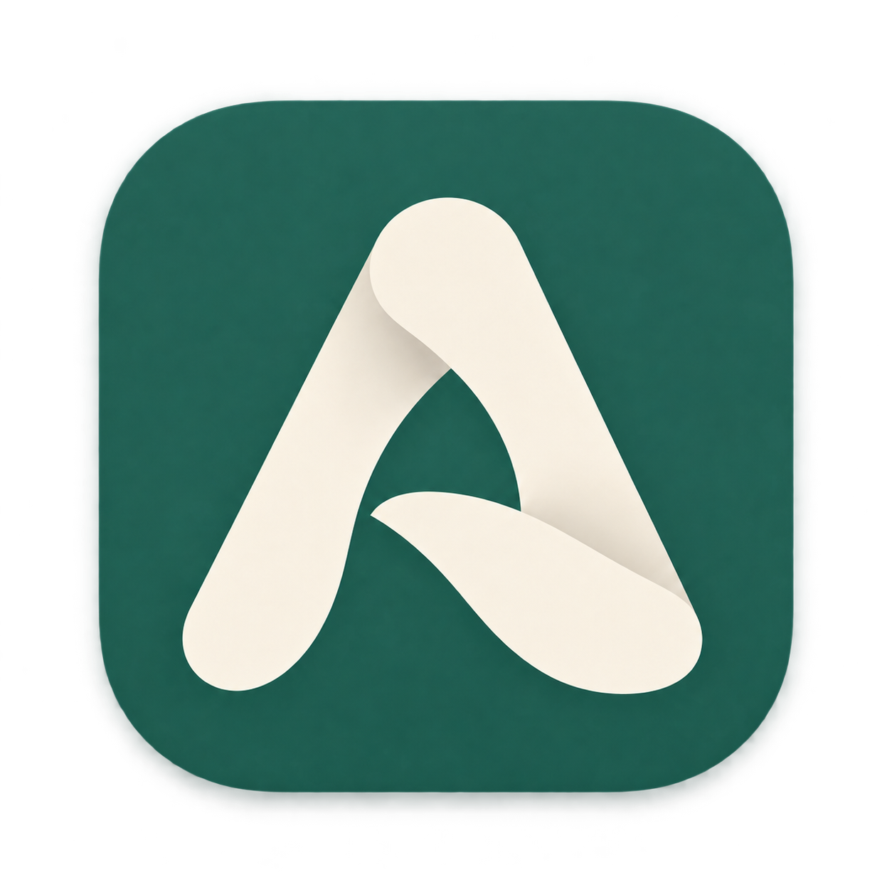
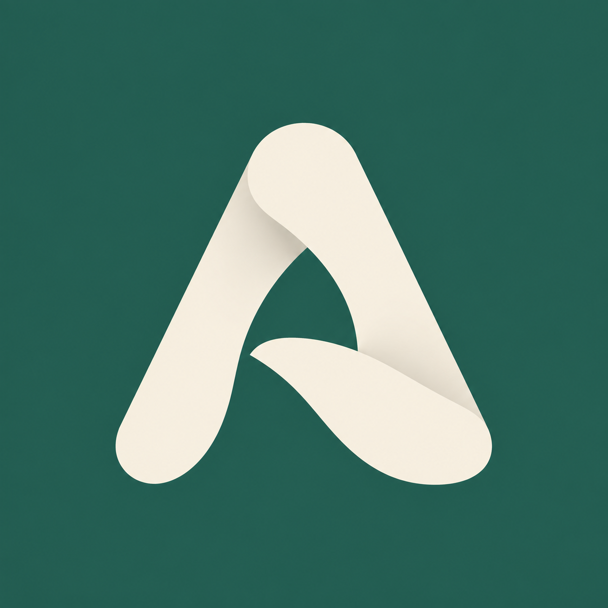

Una «A» como un velo plegado. Verde pino y marfil para una app de conversaciones privadas.



El sistema elige los colores del icono monocromo. Las vistas adaptativas simulan recortes; el launcher decide la forma y las animaciones finales.
Fuentes, formatos y regeneración